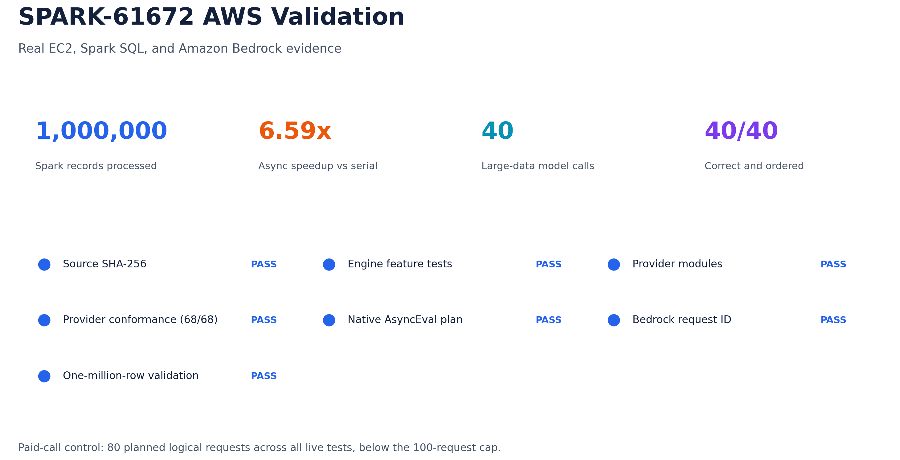
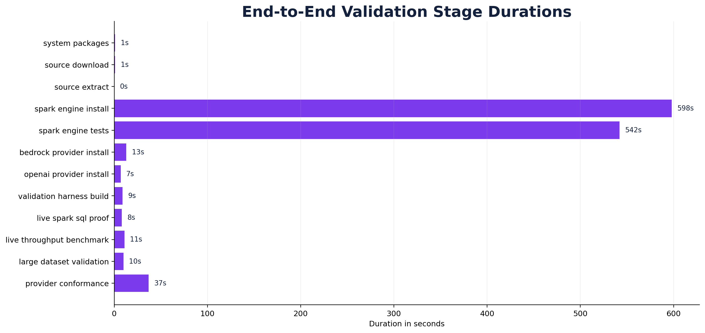
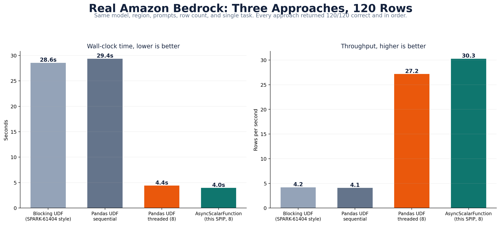
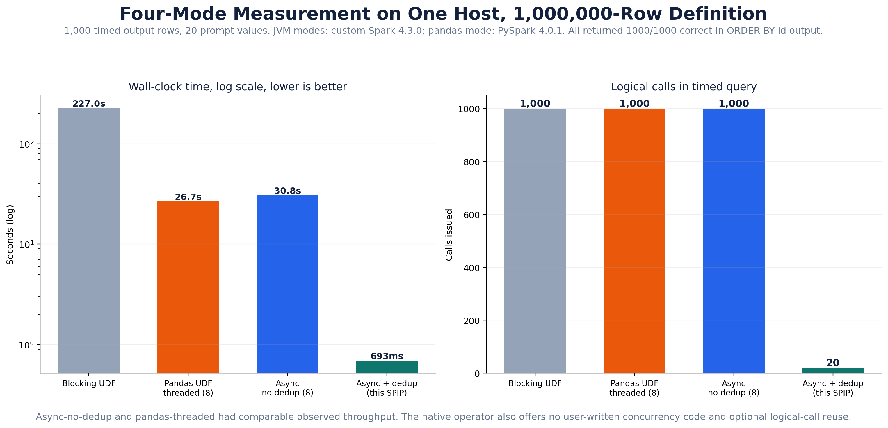
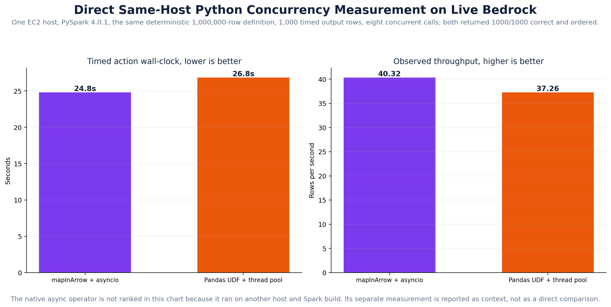
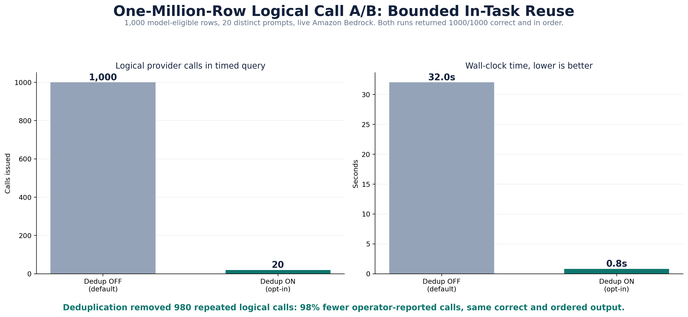
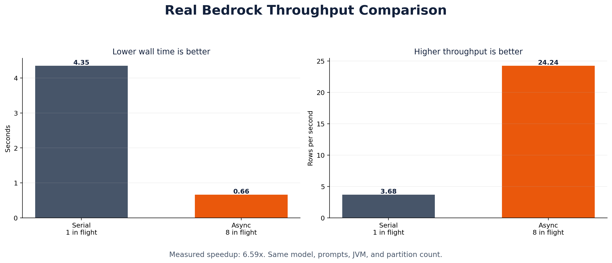
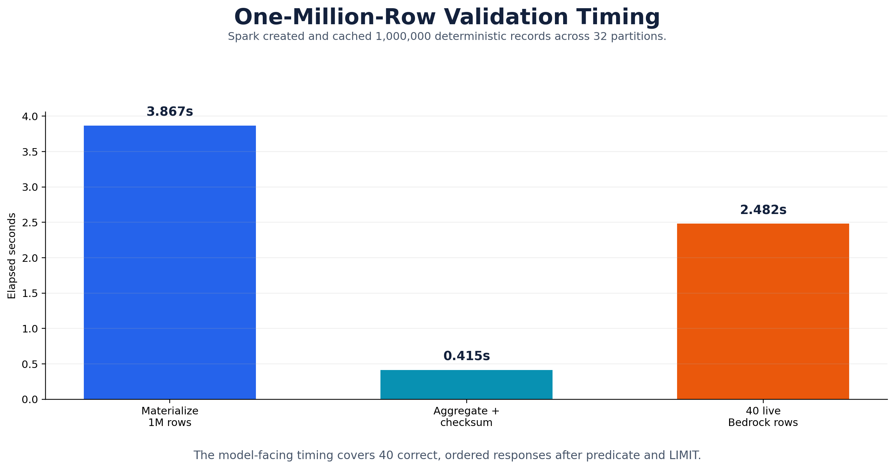
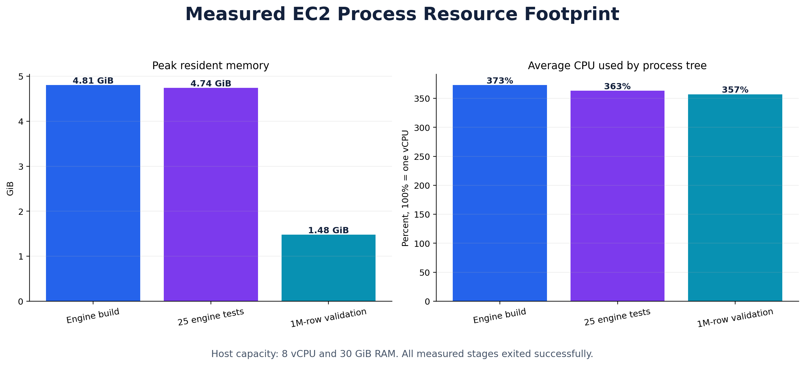

Every required original-run stage passed
The custom Spark source built on AWS, all 25 focused async-engine tests passed, the native planner executed real Bedrock calls, and the measured queries preserved the requested ORDER BY output.

Key benefits
Major speedup
Overlapping in-flight calls cut the same Bedrock workload from 4,350 ms to 660 ms, a 6.59x improvement.
Native to Spark
AI calls run as first-class EvalAsyncFunctions and AsyncEval plan nodes in the optimizer and planner.
Accurate and ordered
Every response was correct and returned in input order, so performance never traded away correctness.
Scales with the query
Filters and LIMIT shrink model-facing work, so AI cost tracks the query rather than raw dataset size.
Provider-neutral
One SPI drives Amazon Bedrock and OpenAI-compatible providers. Switching is configuration, not a rewrite.
Validated POC controls
Allowlists, configured limits, retries, circuit breaking, cancellation, and sanitized row-level provider-call errors were exercised in focused checks.
No secrets in code
Runs on the cloud instance role through the AWS SDK default chain. No key or token in source or config.
Predictable cost
Expensive model calls are bounded by ordinary relational operators and a configurable concurrency ceiling.
Ready for further qualification
The single-host POC is reproducible; multi-node ceilings, retries, distribution, and cancellation remain explicit qualification work.
What the run produced
EvalAsyncFunctions, the physical plan showed AsyncEval, and a real service request id was returned.Stage outcomes
| Stage | Duration | Result |
|---|---|---|
| System Packages | 1 s | PASS |
| Source Download | 1 s | PASS |
| Source Extract | 0 s | PASS |
| Spark Engine Install | 598 s | PASS |
| Spark Engine Tests | 542 s | PASS |
| Bedrock Provider Install | 13 s | PASS |
| Openai Provider Install | 7 s | PASS |
| Validation Harness Build | 9 s | PASS |
| Live Spark Sql Proof | 8 s | PASS |
| Live Throughput Benchmark | 11 s | PASS |
| Large Dataset Validation | 10 s | PASS |
| Provider Conformance | 37 s | PASS |


Four modes across three implementation families
The JVM measurements and corrected pandas-only rerun used the same EC2 host, model, region, prompt definition, and single task. The first pandas orchestration failed before measurement; the corrected rerun produced the pandas rows. Every mode returned 120/120 correct and ordered output.
| Approach | Wall time | Throughput | Speedup | Manual concurrency | Ordered |
|---|---|---|---|---|---|
| Blocking scalar UDF | 28,560 ms | 4.20 rows/s | 1.00x | No | Serial only |
| Pandas UDF, sequential | 29,360 ms | 4.09 rows/s | 0.97x | No | Yes |
| Pandas UDF, threaded (8) | 4,416 ms | 27.17 rows/s | 6.47x | Yes, user-written | Yes |
| AsyncScalarFunction (this SPIP) | 3,963 ms | 30.28 rows/s | 7.21x | No | Engine |


One-million-row benchmark on one host
Two Spark applications regenerated the same deterministic 1,000,000-row definition and prompt mapping on one EC2 host. JVM modes used the custom Spark 4.3.0 build; pandas used PySpark 4.0.1. The modes share a host and inputs, not one materialized DataFrame or one Spark version.
| Approach | In flight | Logical calls or timed rows | Reused | Wall time | Throughput | Ordered |
|---|---|---|---|---|---|---|
| Blocking scalar UDF | 1 | 1,000 | 0 | 227,049 ms | 4.40 rows/s | Yes |
| Pandas UDF, threaded (8) | 8 | 1,000 | 0 | 26,714 ms | 37.43 rows/s | Yes |
| AsyncScalarFunction, dedup off | 8 | 1,000 | 0 | 30,755 ms | 32.52 rows/s | Yes |
| AsyncScalarFunction, dedup on | 8 | 20 | 980 | 693 ms | 1443.00 rows/s | Yes |

Reproduced on a second independent run
The whole benchmark was run again on a separate EC2 instance with a clean build from the same verified source. Both runs agree.
| Approach | Run 1 wall | Run 2 wall | Logical calls or timed rows | Correct and ordered |
|---|---|---|---|---|
| Blocking scalar UDF | 227,049 ms | 228,413 ms | 1,000 | 1000/1000 both |
| Pandas UDF, threaded (8) | 26,714 ms | 25,742 ms | 1,000 | 1000/1000 both |
| AsyncScalarFunction, dedup off | 30,755 ms | 29,878 ms | 1,000 | 1000/1000 both |
| AsyncScalarFunction, dedup on | 693 ms | 863 ms | 20 | 1000/1000 both |

mapInArrow plus asyncio: direct Python comparison
Benchmark 6 directly compared a representative mapInArrow plus asyncio implementation with threaded pandas on one EC2 host under PySpark 4.0.1.
| Direct same-host mode | Wall time | Observed throughput | Correct and ordered |
|---|---|---|---|
| mapInArrow + asyncio | 24,799 ms | 40.32 rows/s | 1000/1000 |
| Pandas UDF, threaded (8) | 26,835 ms | 37.26 rows/s | 1000/1000 |

calls=1000 field is inferred from timed rows, not a server-side counter. Native async without reuse measured 30,755 ms (32.52 rows/s) on another host; that is context, not a controlled ranking. A direct ranking requires all modes on the same host and Spark build with repeated trials.Opt-in bounded task cache reduced logical calls 98%
At most deduplicateMaxEntries keys per function/task are cached. Matches share the first future; unseen keys after saturation are not cached. Off by default because result sharing changes generative-call semantics.
| Mode | Operator-reported logical calls | Reused | Wall time | Correct | Ordered |
|---|---|---|---|---|---|
| Deduplication OFF (default) | 1,000 | 0 | 32,034 ms | 1000/1000 | Yes |
| Deduplication ON (opt-in) | 20 | 980 | 823 ms | 1000/1000 | Yes |

6.59x faster on real Amazon Bedrock
Identical model, prompts, JVM, and partition count. Only the in-flight concurrency changed.
| Mode | In flight | Wall time | Throughput | Correct | Ordered |
|---|---|---|---|---|---|
| Serial baseline | 1 | 4,350 ms | 3.68 rows/s | 16/16 | Yes |
| Async engine | 8 | 660 ms | 24.24 rows/s | 16/16 | Yes |
| Improvement | 6.59x | 6.59x | All | Yes |

Proven at one-million-row scale
Spark generated, cached, grouped, and checksummed 1,000,000 deterministic records, then returned 40 correct, ordered model responses after a predicate and LIMIT.


| Metric | Value | Result |
|---|---|---|
| Dataset Rows | 1,000,000 | PASS |
| Dataset Partitions | 32 | PASS |
| Materialize Elapsed Ms | 3,867 | PASS |
| Aggregate Elapsed Ms | 415 | PASS |
| Id Checksum | 499,999,500,000 | PASS |
| Null Review Rows | 10,310 | PASS |
| Balanced Star Groups | 5 | PASS |
| Candidate Rows Before Limit | 100 | PASS |
| Optimized Has Async Node | Yes | PASS |
| Executed Has Async Node | Yes | PASS |
| Plan Has Limit | Yes | PASS |
| Plan Has Filter | Yes | PASS |
| Live Logical Requests | 40 | PASS |
| Live Elapsed Ms | 2,482 | PASS |
| Live Rows Per Second | 16.1160 | PASS |
| Live Correct Rows | 40 | PASS |
| Live Ordered Rows | Yes | PASS |
67 executed AWS provider validations passed
The AWS harness recorded 67 executed validations, one intentional OpenAI-compatible live skip marker, and zero failures.


What this run confirms
This report presents single-host Spark local-mode validations on real AWS infrastructure. Benchmark values come from named evidence files; cross-run comparisons are labeled as context.